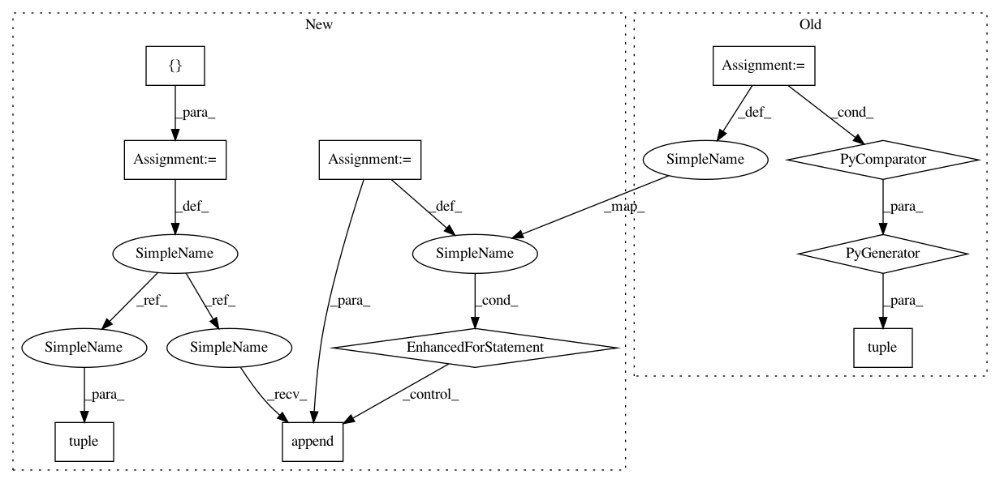

bf464d7ed9283988fea1f548a11a0171fd2ff364,keras/utils/version_utils.py,,swap_class,#Any#Any#Any#Any#,97
Before Change
return v1_cls
// Recursively search superclasses to swap in the right Keras class.
cls.__bases__ = tuple(
swap_class(base, v2_cls, v1_cls, use_v2) for base in cls.__bases__)
return cls
def disallow_legacy_graph(cls_name, method_name):
After Change
return v2_cls if use_v2 else v1_cls
// Recursively search superclasses to swap in the right Keras class.
new_bases = []
for base in cls.__bases__:
if ((use_v2 and issubclass(base, v1_cls)
or (not use_v2 and issubclass(base, v2_cls)))):
new_base = swap_class(base, v2_cls, v1_cls, use_v2)
else:
new_base = base
new_bases.append(new_base)
cls.__bases__ = tuple(new_bases)
return cls
def disallow_legacy_graph(cls_name, method_name):
In pattern: SUPERPATTERN
Frequency: 4
Non-data size: 10
Instances
Project Name: keras-team/keras
Commit Name: bf464d7ed9283988fea1f548a11a0171fd2ff364
Time: 2021-01-06
Author: gardener@tensorflow.org
File Name: keras/utils/version_utils.py
Class Name:
Method Name: swap_class
Project Name: tensorflow/tensorflow
Commit Name: fd758534e21a68dfc934cf5dff3fe4183986df51
Time: 2021-01-06
Author: gardener@tensorflow.org
File Name: tensorflow/python/keras/utils/version_utils.py
Class Name:
Method Name: swap_class
Project Name: apache/incubator-tvm
Commit Name: 6a4c51e187b2cea0ec14996580c89bb2f7176be0
Time: 2020-12-30
Author: comaniac0422@gmail.com
File Name: python/tvm/auto_scheduler/utils.py
Class Name:
Method Name: get_const_tuple
Project Name: tensorflow/kfac
Commit Name: aa5f9ddfdf0447c7a53f4e2676a1c866189315cd
Time: 2019-02-01
Author: jamesmartens@google.com
File Name: kfac/python/ops/curvature_matrix_vector_products.py
Class Name: CurvatureMatrixVectorProductComputer
Method Name: _total_loss